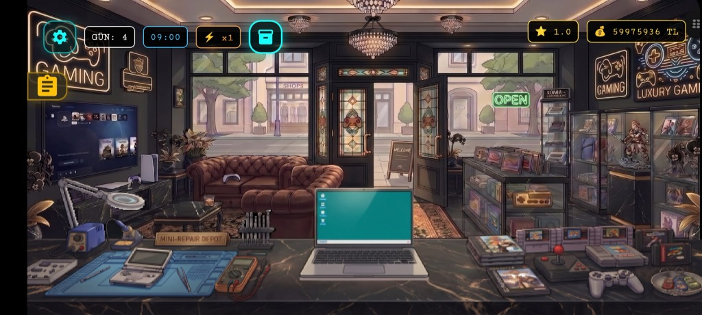

Merhaba, Ben Ahmet Koyuncu
Güvenilir dağıtık mimariler, üretime hazır bilgisayarlı görü hatları ve akıllı uçtan uca sistemler geliştiriyorum. Gerçek dünya telemetrisi, algoritmik hassasiyet ve yüksek performanslı yazılım mühendisliği odaklıyım.
01. BİYOGRAFİ & TEMELLER
Mühendislik Yaklaşımı & Eğitim
Ahmet Hakkında
Fiziksel mekanik ile modern dijital altyapı arasında köprü kuran, yüksek güvenilirlikli yazılım sistemleri geliştirmeye odaklanmış tutkulu bir Bilgisayar Mühendisiyim. Temel uzmanlık alanlarım; gerçek zamanlı telemetri arka uçları mimarisi, optimize edilmiş yapay zeka bilgisayarlı görü sistemleri ve sezgisel çok platformlu uygulamalar geliştirmektir.
İster endüstriyel makinelerden gelen yüksek verili sensör akışlarını analiz etmek olsun, ister çok aşamalı sinir ağı tespit sistemleri tasarlamak olsun; temiz mimariye, katı eşzamanlılık yönetimine ve geliştirici verimliliğine öncelik veririm.
Bilgisayar Mühendisliği Lisans
LisansNecmettin Erbakan Üniversitesi
İleri veri yapıları, algoritmalar, bilgisayar mimarisi, gömülü mikrodenetleyiciler ve modern yazılım mühendisliği paradigmalarına dayalı kapsamlı akademik eğitim.
Temel Yetkinlikler Yetenek Matrisi
Görü hatları, otomasyon scriptleri, asenkron arka uçlar, veri modelleme.
TCP Soketleri, SignalR, WPF, kurumsal arka uç iletişimi.
02. MÜHENDİSLİK PROJELERİ
Öne Çıkan Projeler & Deneyim
Telemetri akış analitiği, uç ve bulutta derin öğrenme çıkarımı ve çok platformlu yerel yazılımlar içeren somut uygulamalar.
Endüstriyel Telemetri Paneli
Ağır endüstriyel vinçler için kritik öneme sahip gerçek zamanlı bir telemetri paketi geliştirdim. Yüksek frekanslı CAN-bus sensör verilerini almak için alt seviye C# TCP soket dinleyicileri kullandım ve SignalR ile web panellerine senkronize telemetri yayını sağladım.
Yapay Zeka Destekli Trafik İhlali
Roboflow üzerinde 7.000+ görüntü ile eğitilmiş 5 özelleştirilmiş YOLOv8 modeli, Shapely geometrik güvenli alan kesişim analizi ve 3x konvolüsyon keskinleştirmeli EasyOCR plaka tanıma motoruyla gerçek zamanlı yaya geçidi denetim sistemi.
Çok Platformlu Mobil Uygulamalar
Flutter ve Dart kullanarak yüksek performanslı, yerel hissettiren iOS ve Android uygulamaları geliştirdim. Dayanıklı çevrimdışı öncelikli (offline-first) depolama mekanizmaları, sağlam yerel önbellekleme, asenkron REST/GraphQL senkronizasyonu ve reaktif durum yönetimi uyguladım.
Retro Trader Simulator

Flutter ve Flame Engine hibrit mimarisini birleştirerek gerçek zamanlı borsa dalgalanmaları (altın, kripto volatilite), oyun içi sanal bilgisayar işletim sistemi (Z-Mail, ShadowNet) ve prosedürel eşya/UV sahtelik değerleme motoru içeren tam teşekküllü 2D simülasyon oyunu geliştirdim.
Floating Memories
Kullanıcı kendi fotoğrafını ve kişisel mesajını etkileşimli bir yapboz hediyesine dönüştürür. Sürüklenip süzülen parçalar Flame ve Forge2D fiziğiyle çalışır; hazırlanan sürpriz bağlantı üzerinden paylaşılır, alıcı yapbozu tamamlayınca mesajı açar.